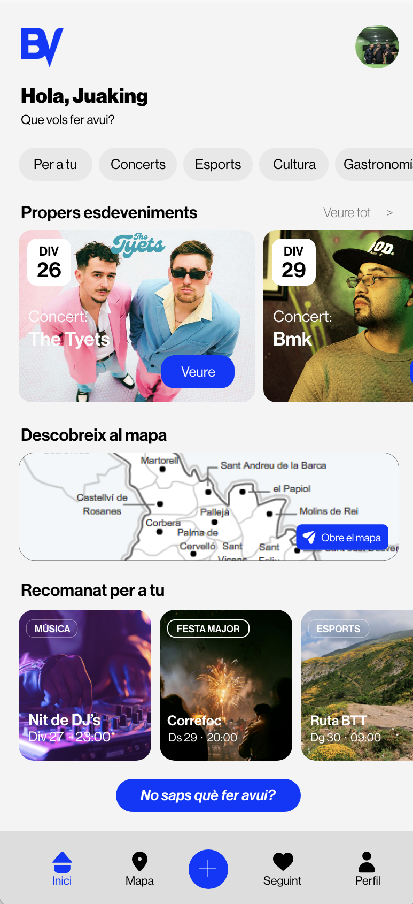

Descobreix concerts, festes majors, tallers i activitats del Baix Llobregat, tot en una sola app.
Hem dissenyat cada funcionalitat perquè trobar activitats al teu voltant sigui tan fàcil com obrir el mòbil.
Cerca activitats per tipus, municipi, data o interessos personals. Troba exactament el que busques en pocs clics, sense perdre temps.
Visualitza tots els esdeveniments del Baix Llobregat sobre un mapa en temps real. Descobreix activitats properes d'un cop d'ull.
Segueix ajuntaments, clubs esportius, entitats culturals o organitzadors. Rebràs notificacions automàtiques quan publiquin nous events.
Respon unes preguntes senzilles i l'app et sugerirà tres activitats perfectes per a tu, ara i aquí, al Baix Llobregat.
De festes majors a tornejos esportius, de concerts a menjars populars. Tota la vida del Baix Llobregat, centralitzada.
Disponible per a iOS i Android. Sense subscripcions, sense trucs. Crea el teu perfil en menys d'un minut.
Selecciona les categories que t'agraden i el teu municipi. L'app s'adaptarà a tu des del primer moment.
Segueix l'ajuntament del teu municipi, clubs locals o associacions i rep notificacions de les seves novetats.
Assisteix als esdeveniments, coneix gent nova i forma part de la vida cultural i social del Baix Llobregat.

BarriViu connecta tots els actors de la vida comunitària del Baix Llobregat en una mateixa plataforma.
Descobreix activitats al teu voltant, tant per a tu com per als teus fills. Participa en la vida cultural i social del teu municipi sense esforç.
Publica les teves activitats directament a l'app i arriba a milers de veïns interessats. Incrementa la participació ciutadana als teus esdeveniments.
Locals musicals, promotors i entitats esportives poden difondre els seus esdeveniments a tota la comarca de manera senzilla i efectiva.
Així es mou el Baix Llobregat a través de BarriViu.
| Dl | 40% |
|---|---|
| Dt | 60% |
| Dc | 85% |
| Dj | 100% |
| Dv | 75% |
| 40% |
| 30% |
| 20% |
| 10% |
Cultura
Social
Esports
Musica
Uneix-te als primers usuaris de BarriViu i descobreix tot el que passa al Baix Llobregat. Descarrega l'app i no et perdis res.